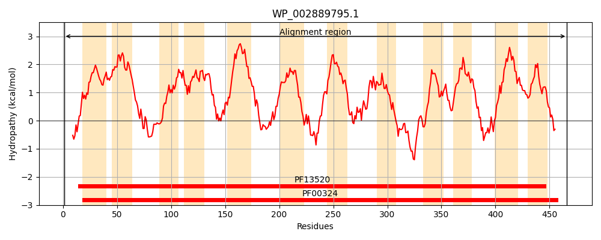
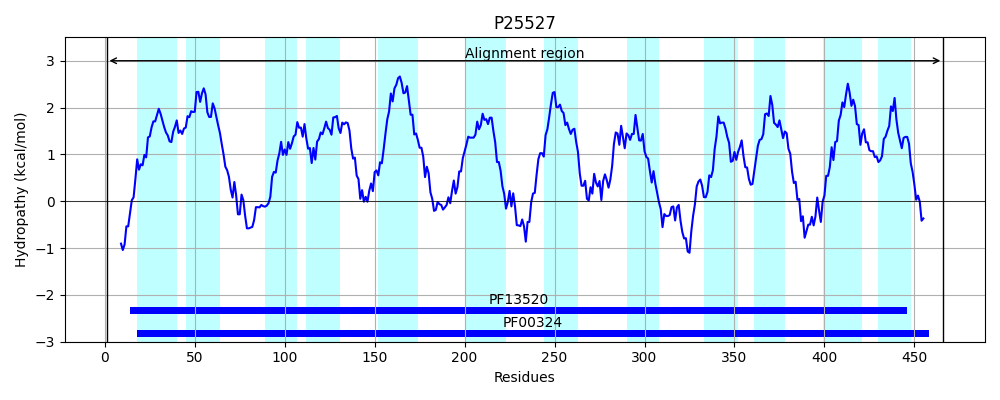
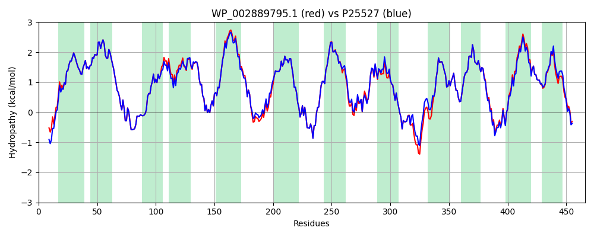

Hit Accession: P25527
Hit TCID: 2.A.3.1.4
Hit Description: gnl|BL_ORD_ID|9540 gnl|TC-DB|P25527|2.A.3.1.4 GABA permease (4-amino butyrate transport carrier) (Gamma- aminobutyrate permease) - Escherichia coli.
Mach Len: 466
e:0.000000
Query TMS Count : 12
Hit TMS Count: 12
TMS-Overlap Score: 12.350000
Predicted Substrates:CHEBI:5584;hydron, CHEBI:16865;gamma-aminobutyric acid
BLAST Alignment:
Score: 2233 , Bit scores: 864 bits, E-value: 0.0e+00, Alignment length: 466, Percentage identity: 93
Query: 1 MGQLSQSQDLGAGLKSRHVTMLSIAGVIGASLFVGSSVAIAEAGPAVLLAYLFAGLLVVMIMRMLAEMAVATPDTGSFSTYADKAIGRWAGYTIGWLYWWFWVLVIPLEANIAAIILHSWVPGVPVWLFSLVITLALTGSNLLSVKNYGEFEFWLALCKVIAILAFIVLGAVAITGFYPYAEVSGISRLWDHGGFMPNGFGAVLSAMLITMFSFMGAEIVTIAAAESDTPDKHIVRATNSVIWRISIFYLCSIFIVVALIPWNMPGLKSIGSYRSVLELLHIPYAKLIMDGVILLSVTSCLNSALYTASRMLYSLSRRGDAPAIMGRTNRSKTPYVAVLLSTGAAFLTVVVNYYAPAKVFKFLIDSSGAIALLVYLVIAVSQLRMRKILQAQGGEIRLRMWLYPYLTWLVIAFITFVLVVMLFRPAQQLEVISTGLLALGIICTVPIMSRWKKLVLWQKLPLQNTR 466
MGQ SQ +LG GLKSRHVTMLSIAGVIGASLFVGSSVAIAEAGPAVLLAYLFAGLLVVMIMRMLAEMAVATPDTGSFSTYADKAIGRWAGYTIGWLYWWFWVLVIPLEANIAA+ILHSWVPG+P+WLFSLVITLALTGSNLLSVKNYGEFEFWLALCKVIAILAFI LGAVAI+GFYPYAEVSGISRLWD GGFMPNGFGAVLSAMLITMFSFMGAEIVTIAAAESDTP+KHIVRATNSVIWRISIFYLCSIF+VVALIPWNMPGLK++GSYRSVLELL+IP+AKLIMD VILLSVTSCLNSALYTASRMLYSLSRRGDAPA+MG+ NRSKTPYVAVLLSTGAAFLTVVVNYYAPAKVFKFLIDSSGAIALLVYLVIAVSQLRMRKIL+A+G EIRLRMWLYP+LTWLVI FITFVLVVMLFRPAQQLEVISTGLLA+GIICTVPIM+RWKKLVLWQK P+ NTR
Sbjct: 1 MGQSSQPHELGGGLKSRHVTMLSIAGVIGASLFVGSSVAIAEAGPAVLLAYLFAGLLVVMIMRMLAEMAVATPDTGSFSTYADKAIGRWAGYTIGWLYWWFWVLVIPLEANIAAMILHSWVPGIPIWLFSLVITLALTGSNLLSVKNYGEFEFWLALCKVIAILAFIFLGAVAISGFYPYAEVSGISRLWDSGGFMPNGFGAVLSAMLITMFSFMGAEIVTIAAAESDTPEKHIVRATNSVIWRISIFYLCSIFVVVALIPWNMPGLKAVGSYRSVLELLNIPHAKLIMDCVILLSVTSCLNSALYTASRMLYSLSRRGDAPAVMGKINRSKTPYVAVLLSTGAAFLTVVVNYYAPAKVFKFLIDSSGAIALLVYLVIAVSQLRMRKILRAEGSEIRLRMWLYPWLTWLVIGFITFVLVVMLFRPAQQLEVISTGLLAIGIICTVPIMARWKKLVLWQKTPVHNTR 466 | Protein Hydropathy Plots: |
|---|
|  |  |
Pairwise Alignment-Hydropathy Plot:
|
|---|
|  |